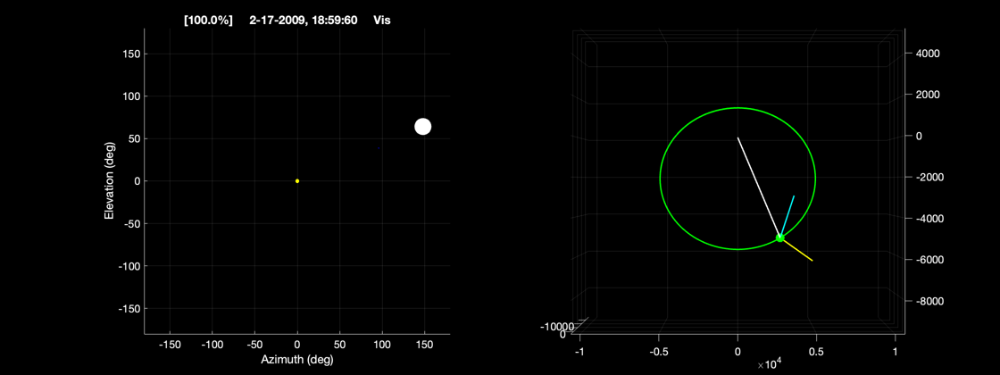

Propagate an orbit about the moon. Show the visibility sun, earth, moon.
------------------------------------------------------------------------
See also Constant, Date2JD, RVOrbGen, Period, MoonV1, SolarVisibility
------------------------------------------------------------------------
jD0 = Date2JD( [2009, 2, 15, 19, 0, 0] );
sma = 6531.4;
inc = 56.2*pi/180;
ra = 0;
per = pi/2;
ecc = 0.6;
ma = 0;
el = [sma,inc,ra,per,ecc,ma];
muMoon = Constant('mu moon');
T = Period(sma,muMoon);
t = linspace(0,2*86400,2*200);
jD = jD0 + t/86400;
radSun = Constant('sun radius');
radMoon = Constant('equatorial radius moon');
radEarth = Constant('equatorial radius earth');
[unitMoon,distMoon] = MoonV1(jD);
rMEs = [unitMoon(1,:).*distMoon;unitMoon(2,:).*distMoon;unitMoon(3,:).*distMoon;];
rCMs = RVOrbGen( el, t, [], muMoon );
rCEs = rCMs + rMEs;
SolarVisibility(rCEs,jD,3,'Moon',360,0);
